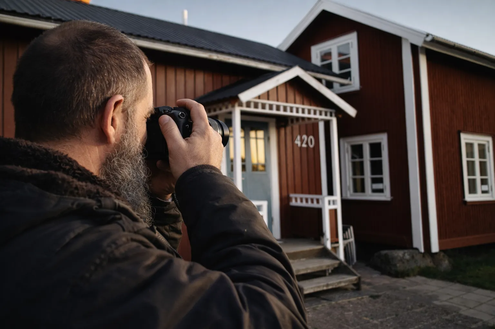
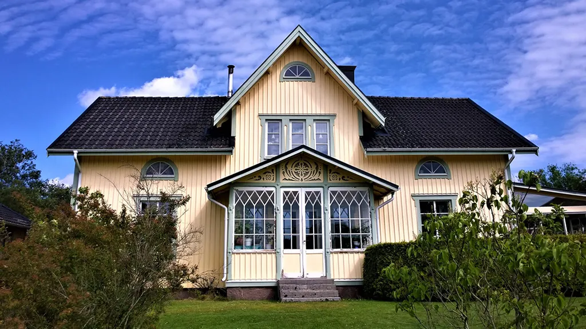
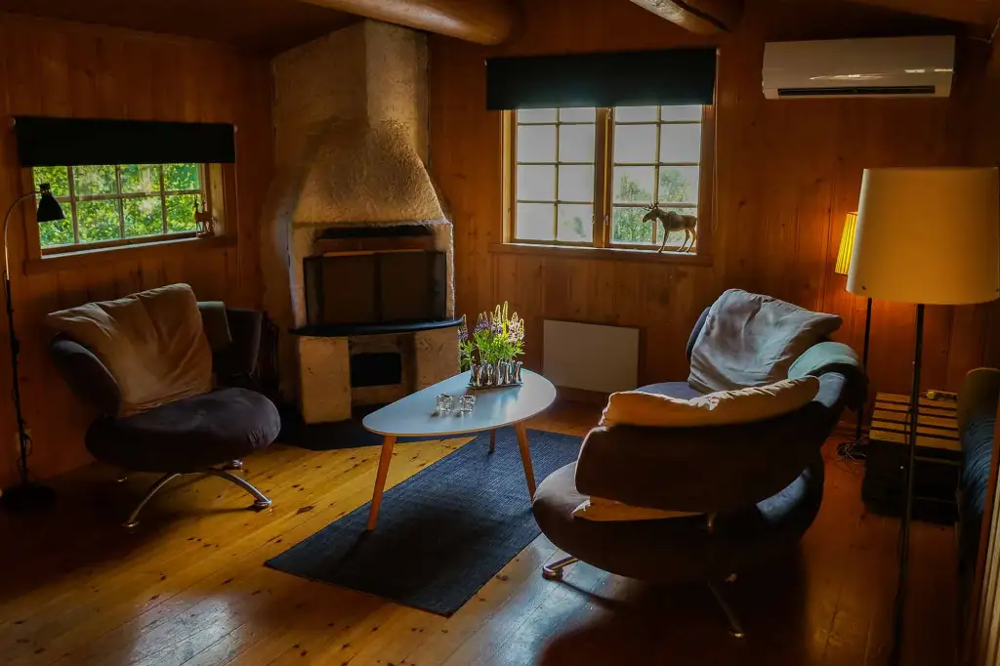
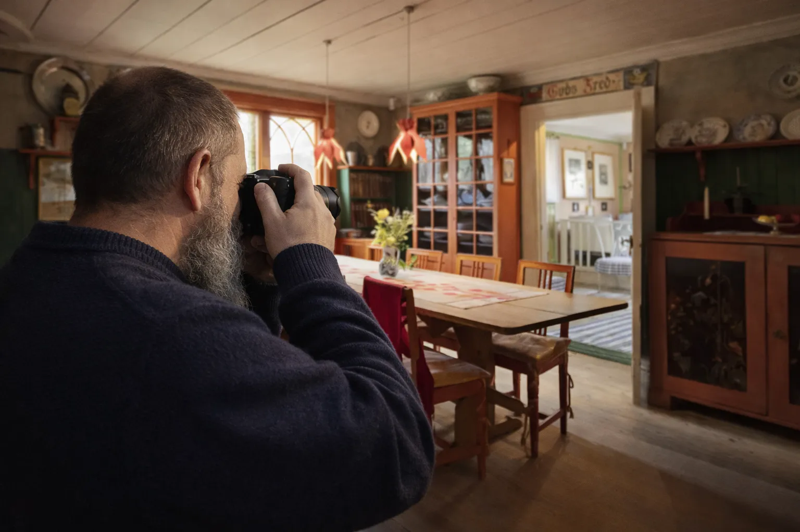
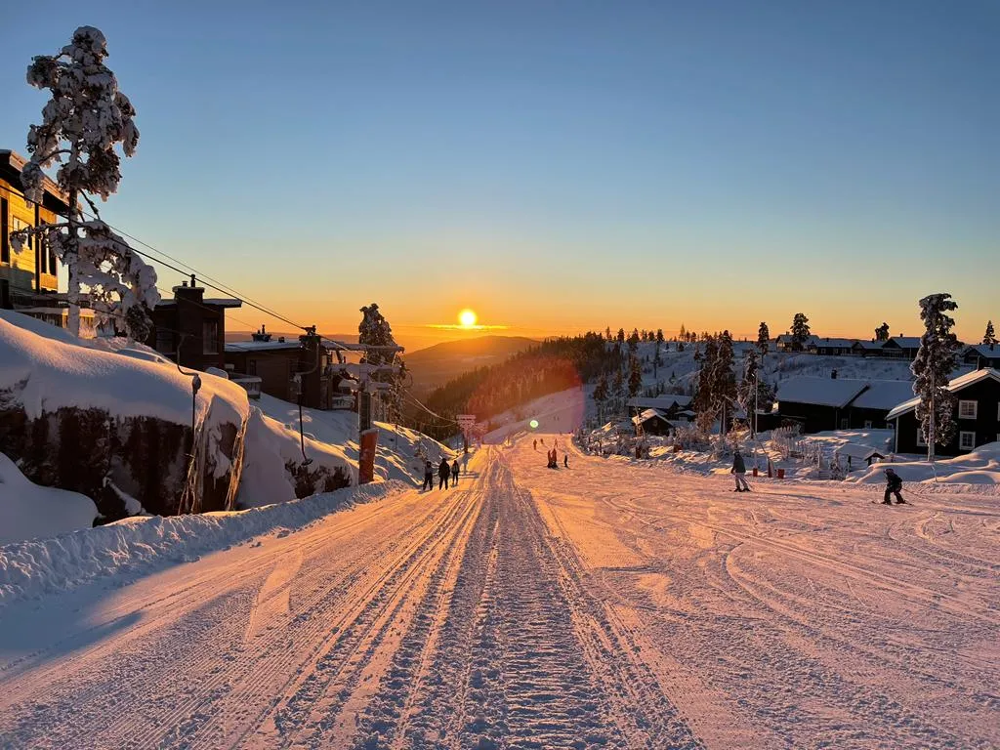
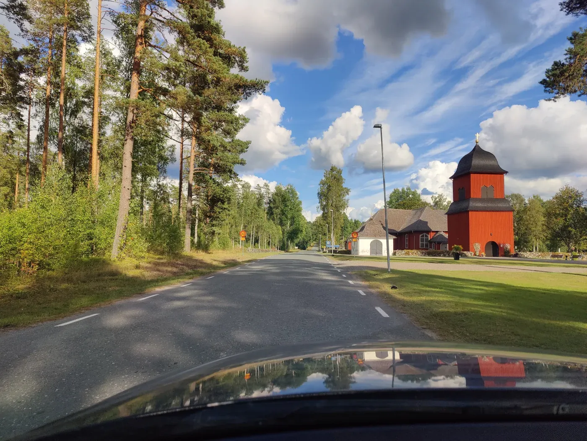
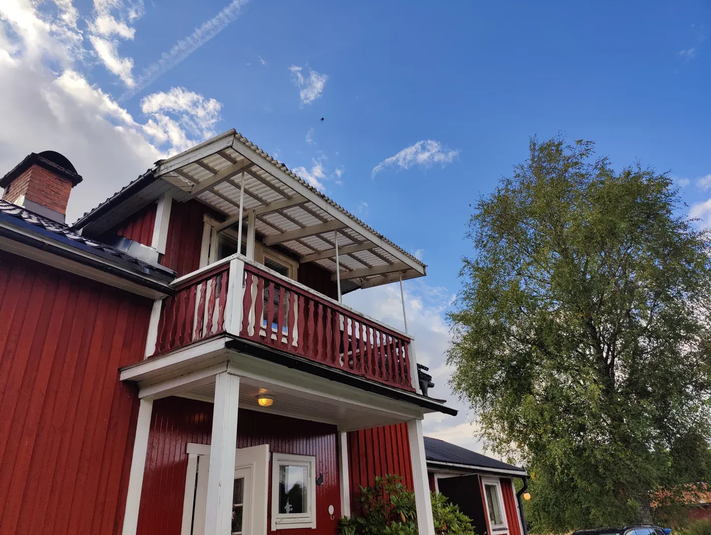
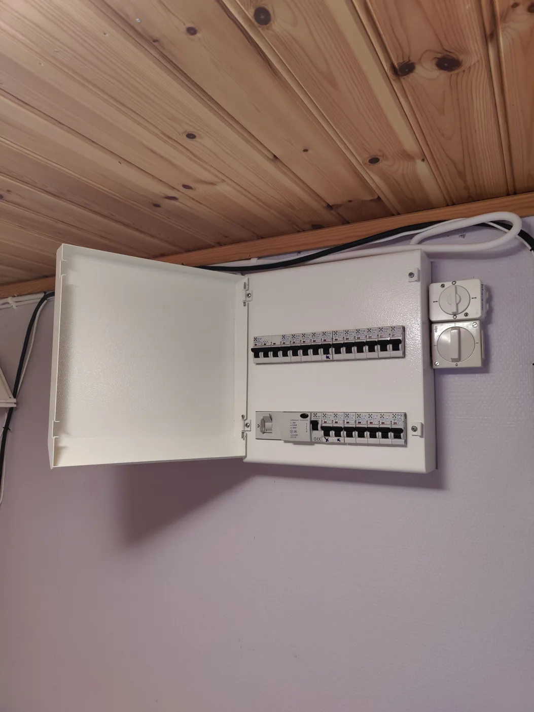
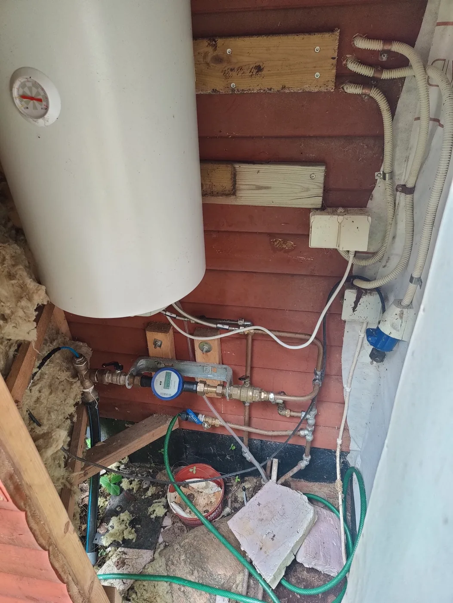

Stuur de woningadvertentie
Stuur de advertentie en vertel welke vragen of aandachtspunten voor u het belangrijkst zijn.


WONINGCHECK VÄRMLAND
Een huis in Zweden op het oog, maar kunt u niet zelf naar de bezichtiging? Ik bezoek de woning namens u in Värmland en geef u een praktische eerste indruk voordat u een reis plant.
WAAROM EEN WONINGCHECK?
Online advertenties geven veel informatie, maar laten zelden alles zien wat u wilt weten voordat u een lange reis maakt om een woning te bekijken.
Met Woningcheck Värmland kan ik de woning namens u bezoeken en een praktische indruk geven van het huis, de zichtbare staat en de directe omgeving. Vooraf bespreken we uw vragen en welke informatie u na het bezoek ontvangt.
Ik werk vanuit Lesjöfors en kan woningen in Filipstad en omgeving bezoeken. Een bezichtiging elders in Värmland is mogelijk in overleg, afhankelijk van de afstand, toegang en beschikbaarheid. De werkzaamheden en reiskosten spreken we vooraf af.
Reistijd: De eerste 30 minuten reistijd zijn gratis. Daarna wordt 399 SEK per uur inclusief moms (btw) gerekend.
ZO WERKT HET
Stuur de advertentie en vertel welke vragen of aandachtspunten voor u het belangrijkst zijn.
Toegang en een afspraak met de makelaar of verkoper moeten mogelijk zijn. Zodra de checklist en kosten zijn afgesproken, bezoek ik de woning en leg ik de zichtbare aandachtspunten vast.
U ontvangt foto’s en praktische bevindingen volgens de afgesproken checklist. Video maakt deel uit van de uitgebreide woningcheck. Zo krijgt u een beter beeld voor uw volgende stap.
WAT IK KAN BEKIJKEN
Daklijn, gevel, ramen, toegang, zichtbare slijtage en de algemene staat rond het gebouw.
De zichtbare staat van kamers, vloeren, muren, keuken, badkamer en andere toegankelijke ruimtes.
Zichtbare voorzieningen voor verwarming, water en elektriciteit, voor zover ze zonder specialistische tests te bekijken zijn.
Toegangswegen, directe omgeving, terrein en andere praktische indrukken rond de woning.
Als iets in de advertentie onduidelijk is, kan ik daar tijdens het bezoek extra aandacht aan besteden.
Extra beeldmateriaal helpt u de advertentie te vergelijken met hoe de woning er werkelijk uitziet.
EEN WONINGCHECK IN DE PRAKTIJK
Praktijkvoorbeelden van details, interieurs en omgevingen die tijdens een bezichtiging vastgelegd kunnen worden.









DUIDELIJKE TERUGKOPPELING
Het doel is een realistische eerste indruk en het benoemen van zichtbare praktische aandachtspunten die nader onderzoek kunnen verdienen voordat u een reis boekt, een bod doet of een professionele keuring laat uitvoeren.
Ik neem mijn jarenlange technische ervaring mee bij het bekijken van de woning en het duiden van wat ik aantref. Mijn bevindingen werk ik uit in een uitgebreide, helder leesbare rapportage, zodat u inzicht krijgt in de staat van de woning en de aandachtspunten voor een mogelijke vervolgstap.
Gebruik het intakeformulier om aan te geven wat u tijdens de bezichtiging gefotografeerd, gecontroleerd of besproken wilt hebben.
DUIDELIJKE STARTPUNTEN
De benodigde tijd en prijs hangen af van de woning, reisafstand en gewenste checklist. Deze conceptpakketten maken de verschillen duidelijk.
BASISCHECK
Vanaf 1.995 SEK
Kilometerkosten komen erbij: 5 SEK/km.
Reistijd: De eerste 30 minuten reistijd zijn gratis. Daarna 399/uur.
Voor een kleinere woning of een gerichte lijst met aandachtspunten.
UITGEBREIDE WONINGCHECK
Vanaf 3.495 SEK
Kilometerkosten komen erbij: 5 SEK/km.
Reistijd: De eerste 30 minuten reistijd zijn gratis. Daarna 399/uur.
Voor kopers die een breder beeld willen voordat ze op reis gaan of een vervolgstap bepalen.
WONINGCHECK OP MAAT
Op aanvraag
Voor afgelegen woningen, specifieke aandachtspunten of een lange lijst met te bekijken onderdelen.
UW VRAGEN VOORAF
Ja, als een bezoek met de makelaar of verkoper en toegang tot de woning mogelijk zijn. Stuur de advertentie en uw vragen. We bespreken vooraf wat ik voor u kan bekijken, wanneer het bezoek kan plaatsvinden en wat het kost.
Ik werk vanuit Lesjöfors en bezoek woningen in Filipstad en omgeving. Andere plaatsen in Värmland zijn mogelijk in overleg. Afstand, reistijd en beschikbaarheid bepalen wat haalbaar is; de reiskosten worden vooraf besproken.
Reistijd: De eerste 30 minuten reistijd zijn gratis. Daarna wordt 399 SEK per uur inclusief moms (btw) gerekend.
De basischeck omvat fotodocumentatie en een korte schriftelijke samenvatting. Bij de uitgebreide woningcheck hoort ook uitgebreide foto- en videodocumentatie. Voor een woningcheck op maat spreken we de terugkoppeling vooraf af.
De basischeck begint bij 1.995 SEK en de uitgebreide woningcheck bij 3.495 SEK. Voor deze pakketten komen kilometerkosten van 5 SEK/km erbij. Een woningcheck op maat is op aanvraag. U krijgt vooraf een prijsindicatie op basis van de woning, reisafstand en gewenste checklist.
Reistijd: De eerste 30 minuten reistijd zijn gratis. Daarna wordt 399 SEK per uur inclusief moms (btw) gerekend.
Nee. De woningcheck is praktische, visuele bezichtigingshulp en vervangt geen bouwkundige keuring, Zweedse överlåtelsebesiktning, taxatie of specialistisch onderzoek. Voor een formele keuring schakelt u een daarvoor gekwalificeerde professional in.
EEN HUIS KOPEN OP AFSTAND?
Stuur de woninglink en vertel wat uw belangrijkste aandachtspunten zijn. Dan stel ik een praktische checklist en realistische prijsindicatie voor.
HEEFT U EEN WONING OP HET OOG?
Vertel waar de woning ligt en wat u precies wilt weten. Dan kan ik aangeven wat haalbaar is en duidelijke afspraken met u maken.